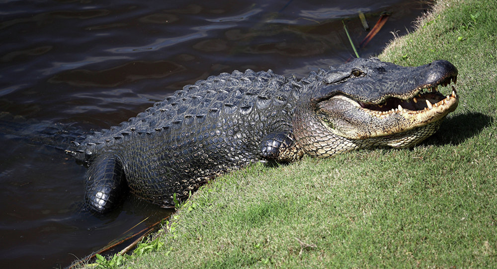
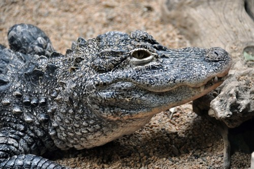
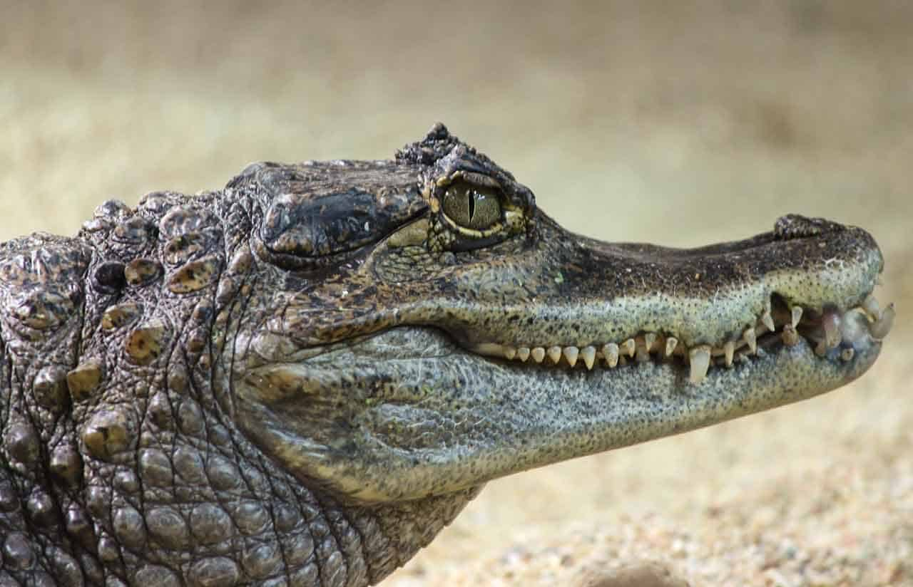
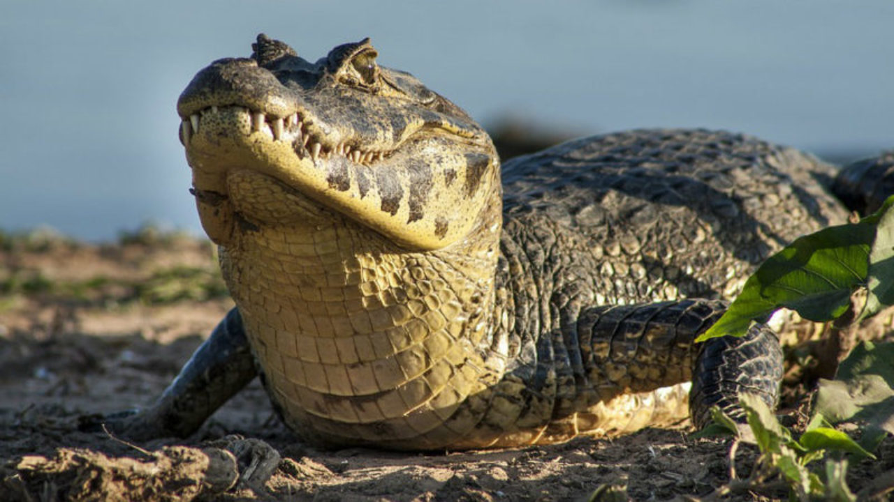
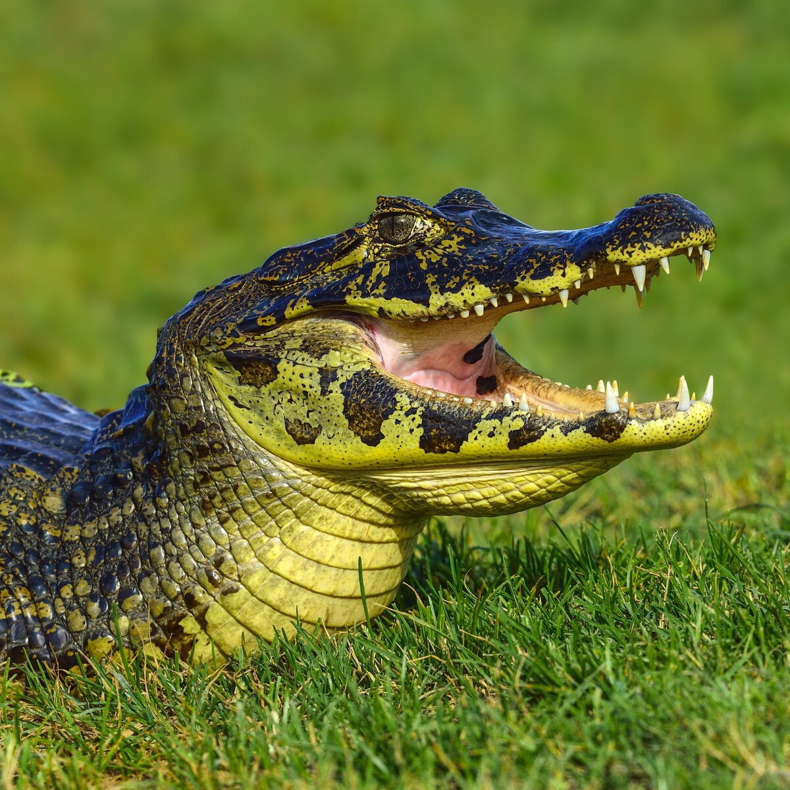
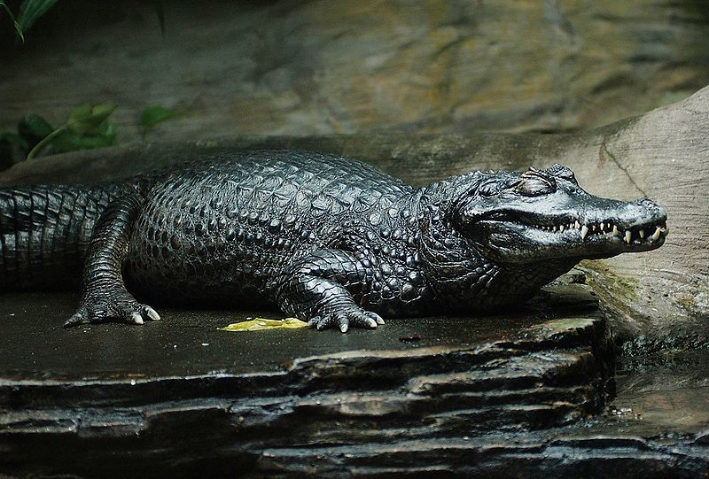
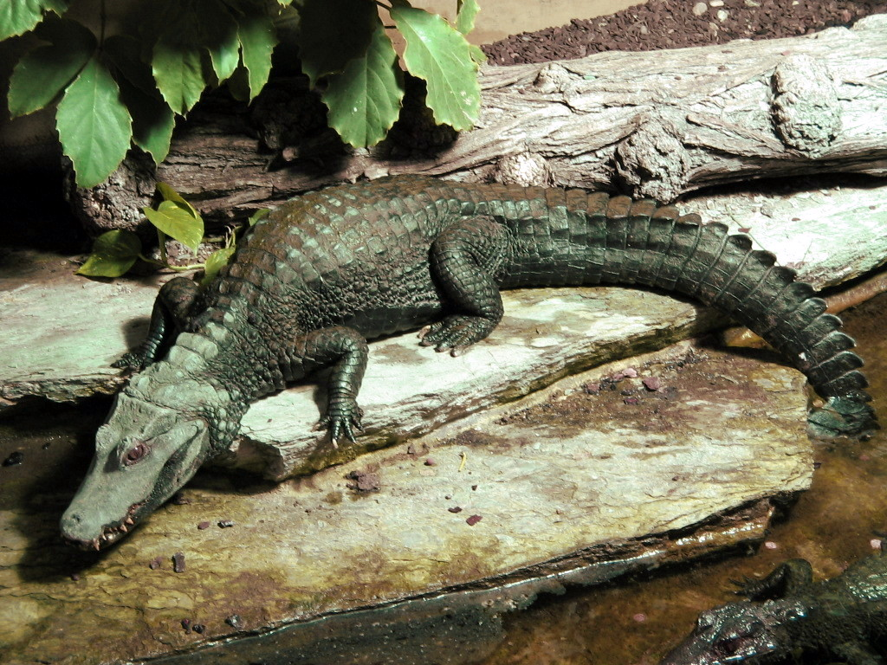
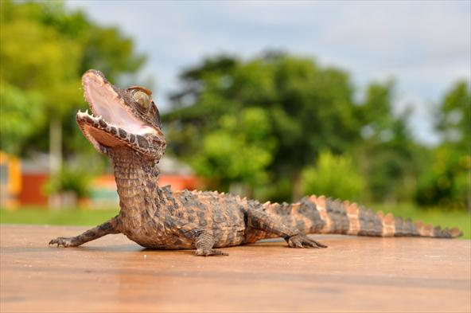

O jacaré é um animal réptil similar ao crocodilo no qual se pode distinguir por ter uma cabeça mais curta e larga e pela existência de membranas interdigitais nas patas.
Os jacarés naturalmente habitam o continente americano sendo também possível encontrá-los no leste da China.
Para além do nome jacaré, é usual esta espécie ser reconhecida pelos nome aligátor e caimão, tendo estes três nomes origens um diferentes.
O nome jacaré provém do nome tupi îakaré, significando "aquele que olha de lado, aquele que é torto".
O nome aligátor provém do nome inglês alligator que teve origem anglicanamente do espanhol El lagarto.
Por fim, o nome caimão tem origem do nome taino kaiman.
| Nome | Distribuição Geográfica | Estado na IUCN | Aspeto |
|---|---|---|---|
| Jacaré-Americano Alligator mississippiensis |
Sudeste dos Estados Unidos | Pouco preocupante |  |
| Jacaré-da-china Alligator sinensis |
Sudeste da China | Criticamente em perigo |  |
| Caimão-de-lunetas Caiman crocodilus |
México, Brasil e Peru | Pouco preocupante |  |
| Jacaré-de-papo-amarelo Caiman latirostris |
Sudeste da América do Sul | Pouco preocupante |  |
| Jacaré-do-pantanal Caiman yacare |
Bolívia, Brasil e Argentina | Pouco preocupante |  |
| Jacaré-negro Melanosuchus niger |
Bacia do rio Amazonas | Dependente da conservação |  |
| Jacaré-anão Paleosuchus palpebrosus |
Bacias do rio Amazonas e Orinoco | Pouco preocupante |  |
| Jacaré-coroa Paleosuchus trigonatus |
Bacias do rio Amazonas e Orinoco | Pouco preocupante |  |
| Classificação Científica |
|---|
| Reino: Animalia |
| Filo: Chordata |
| Classe: Reptilia |
| Ordem: Crocodylia |
| Família: Alligatoridae |